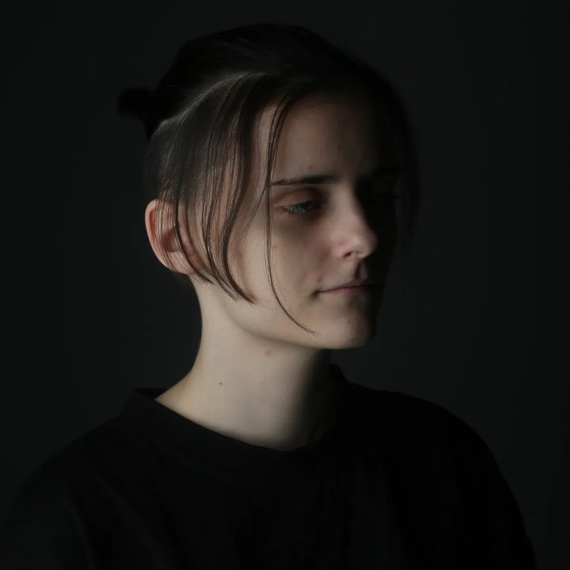
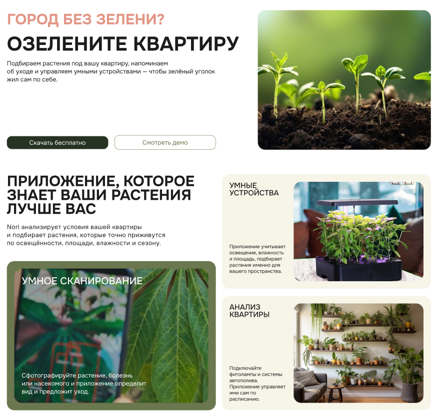
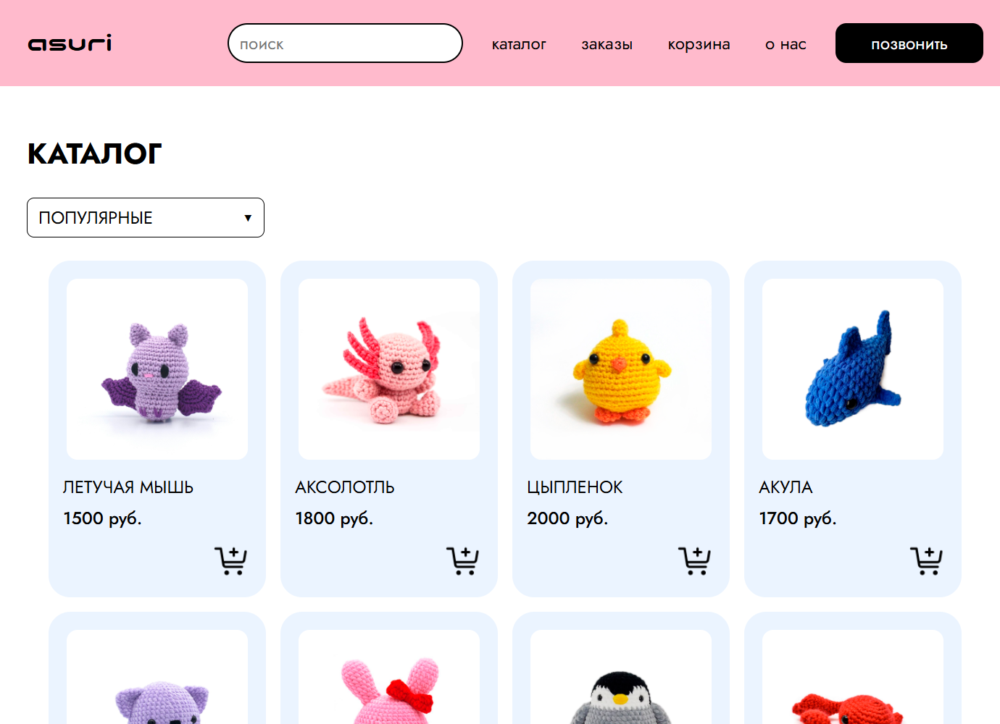
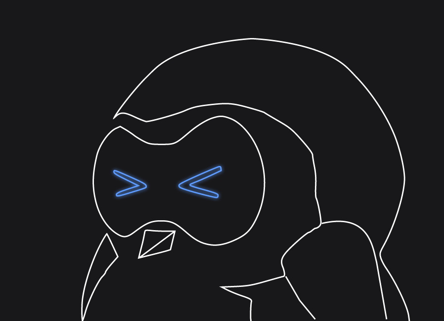
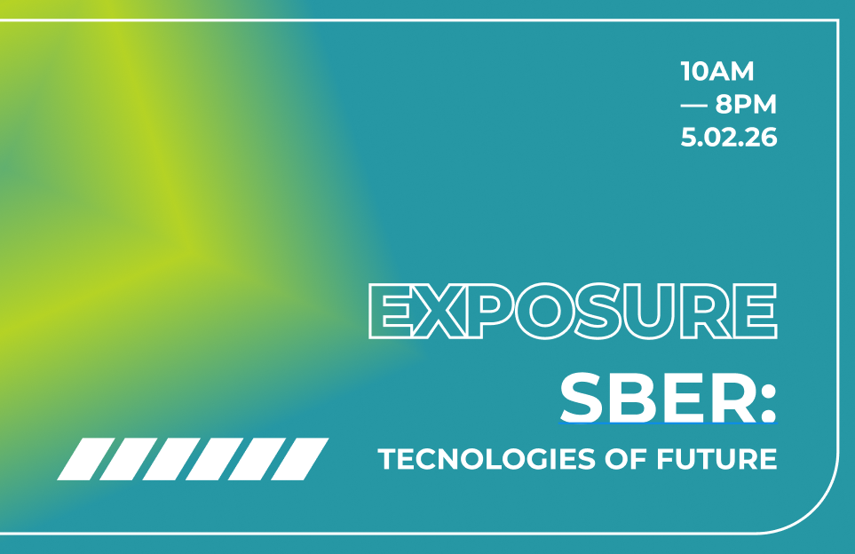

✳
UI / UX DESIGN
Структура экранов, визуальная иерархия, пользовательские сценарии и прототипирование.
DIGITAL PORTFOLIO / 2026
СЕРЕБРЯКОВА АЛЕКСАНДРА
ПРИКЛАДНАЯ ИНФОРМАТИКА В ДИЗАЙНЕ
4 КУРС · СПбГУПТД
Создаю цифровые проекты на пересечении дизайна, технологий и визуальных идей. Изучаю, как интерфейсы могут менять повседневный опыт.
СМОТРЕТЬ ПРОЕКТЫ ↗01 / WHO AM I

АС✳DESIGNПривет, я Александра — студентка 4 курса СПбГУПТД по направлению «Прикладная информатика в дизайне».
Мне интересно соединять визуальную выразительность и функциональность: придумывать концепции, проектировать интерфейсы и воплощать их в веб-страницах. В учебных проектах я исследую разные стили — от чистого UI/UX до экспериментальной цифровой эстетики.
Сейчас я развиваю навыки дизайна и веб-разработки и собираю портфолио из учебных работ и собственных концепций.
02 / TOOLKIT
Инструменты и направления, которые использую и изучаю в учебных проектах.
Структура экранов, визуальная иерархия, пользовательские сценарии и прототипирование.
Создание структуры страниц, адаптивная вёрстка и базовая интерактивность.
Работа с цветом, типографикой, композицией и визуальным языком проекта.
Поиск идеи, сбор референсов, оформление концепции и презентация результата.
03 / SELECTED WORKS
Учебные проекты и концепции. Выберите категорию, чтобы отфильтровать работы.
Показаны все проекты: 4

FIG. 001 / NORI APPПромо-сайт приложения Nori и разработка интерфейсов веб-приложения. Nori анализирует условия вашей квартиры и подбирает растения, которые приживутся с учётом освещённости, площади, влажности и сезона.

FIG. 002 / ASURI WEBSITEРазработка веб-сайта для проекта вязаных игрушек ASURI: презентация изделий, каталог с моделями и ценами, а также страница оформления заказа.

FIG. 003 / PRODUCT DESIGNРазработка дизайна настольного робота-помощника Linkan и создание его 3D-модели. Дополнительно спроектирован дизайн мобильного приложения для оформления и взаимодействия с устройством.

FIG. 004 / EXHIBITION DESIGNРазработка концепции выставочного пространства для Сбербанка: 3D-моделирование, визуальная айдентика и оформление среды, включая дизайн вывесок и навигационных элементов.
DESIGN × TECHNOLOGY
Дизайн и технологии — это не просто инструменты. Это язык, на котором я хочу говорить с миром.
✳04 / GET IN TOUCH
ЕСТЬ ИДЕЯ ИЛИ ИНТЕРЕСНЫЙ ПРОЕКТ?
Открыта к учебным коллаборациям, новым задачам и обмену идеями.
НАПИСАТЬ МНЕ ↗